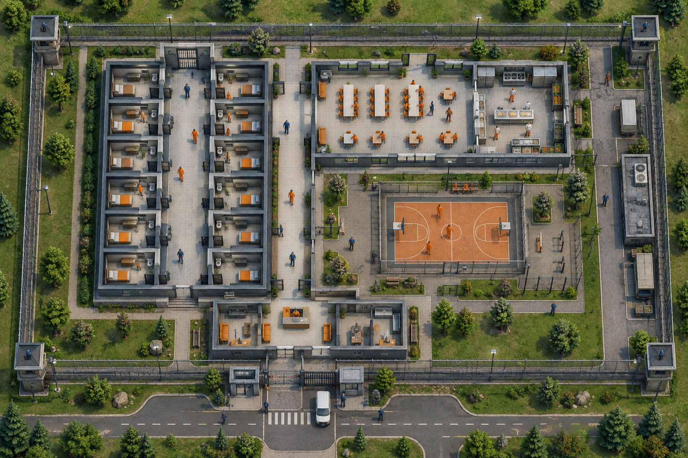

Aktualna iteracja 05: po audycie, z panelami, trybem nocnym i konstytucją 20 artykułów.
Otwórz aktualny prototypW prototypie otwórz Księgę projektu, aby zobaczyć dokumentację w czytelnej formie oraz interaktywne widoki urządzeń.
Historyczne wersje zawierają wcześniejsze błędy. Nie korzystaj w nich z zapisu, jeśli chcesz zachować dane lokalnej demonstracji. Aktualne podglądy urządzeń mają już izolowaną pamięć.

Ilustracja koncepcyjna, nie atlas ani symulacja.